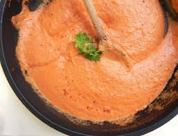
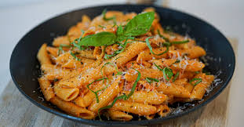

Instructions
Step 1: Add a teaspoon of salt to a medium-sized pot of water and boil.
Step 2: While heating the water, heat a frying pan on medium and add a tablespoon of olive oil.
Step 3: When the water begins to boil, add the pasta and turn the heat down slightly. Stir the pasta every couple minutes to prevent it sticking.
Step 4: When the oil begins to thin out, add the mushrooms and coat evenly in the oil. Add 1/2 teaspoon of salt, 1/4 teaspoon of black pepper, and 1/2 teaspoon of garlic powder.
Step 5: Cook the mushrooms until all the water evaporates out of the pan. At this point, take them off the heat or continue to cook them if you like them charred (like I do).
Step 6: When the pasta starts to float, strain it. Save some of the pasta water (strain the pasta over top of the pot) for adding into the sauce later.
Step 7: When the mushrooms are done, remove them from the pan and leave on a small plate. Then heat the pan on medium-low with 1 tablespoon of olive oil.
Step 8: Add the tomato paste to the oil and stir around. It will burn quickly, so stir it around and flip it every 15 seconds. Heat for 1 minute (or until warm)
Step 9: Add the heavy cream and stir everything together to incorporate it all. Once homogeneous, add the spices and diced basil and stir.

Step 10: Add the mushrooms and the pasta water and stir.
Step 11: If the pasta is still wet, add it to the sauce and stir. If it has begun to dry out and get sticky, run it under water and mix it until it's no longer sticky. Then add it to the sauce and combine.
Step 12 (optional): Grate some fresh cheese on top and serve.
